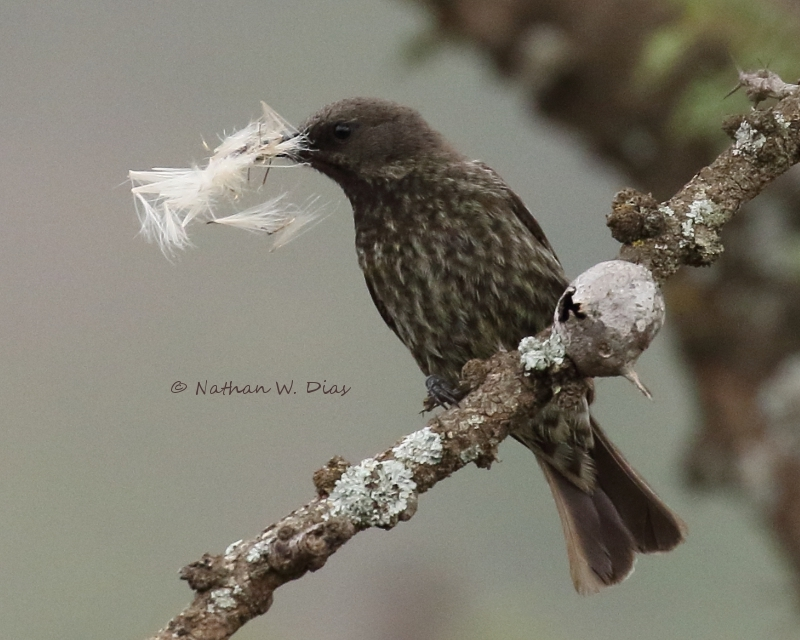
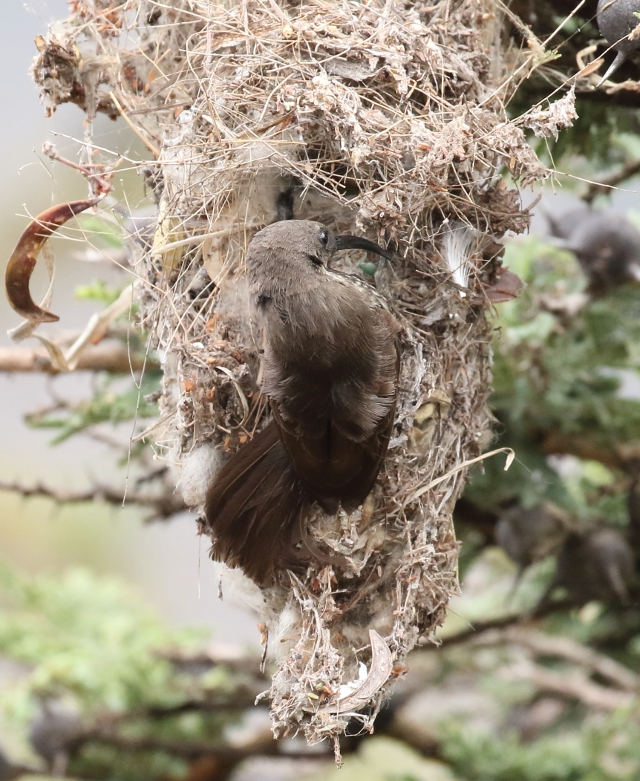
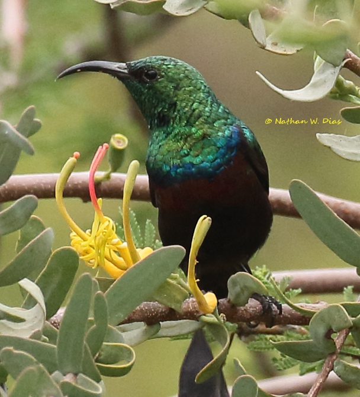
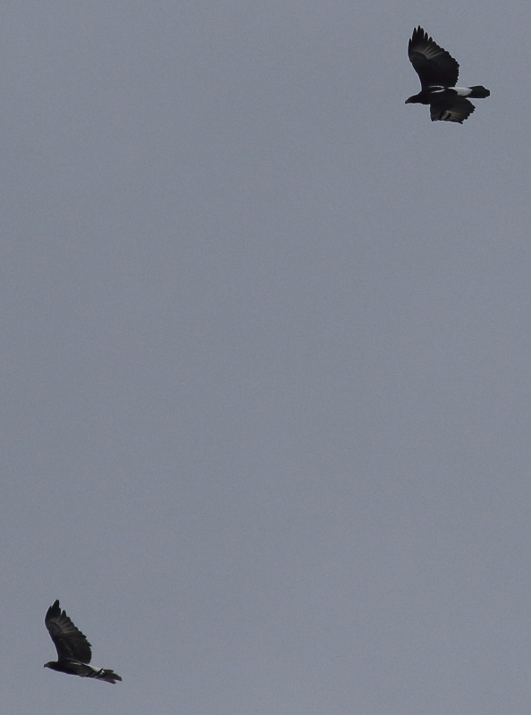

From: Nate Dias <offshorebirder@gmail.com>
Date: 2017-02-03 15:11
Subject: Magadi Road, January 29 - Verreaux's Eagles, Martial Eagle, etc.
This past Sunday I spent the cloudy morning birding along Magadi Road
with Roger Smith and Ben Mugambi. Birding was steady and good all the
way from Corner Baridi down to the Olepolos Cliffs.
We got started at 7:15 with Yellow-rumped Seedeaters, Grey-backed
Camaroptera, African Citril, Common House Martin and Eurasian Swifts.
Then came Red-fronted Barbet, Red-faced Crombec and Red-throated Tit
in quick succession. Then we enjoyed watching a female
Scarlet-chested Sunbird gathering nesting material and taking it to
her nest (photo attached). Other birds at our first stop included
Yellow-breasted Apalis, Nubian Woodpecker, and Absynnian Scimitarbill.
A short drive downhill brought us to a new group of birds - Variable
Sunbird, Fork-tailed Drongo, Pied Wheatear, Yellow-bellied Eremomela,
Northern Wheatear, and Singing Cisticola. We also saw numbers of
Swifts and Martins swirling out over the valley - Nyanza Swifts, Palm
Swifts, Rock Martins, and Plain Martins. Other goodies included
Holub's Golden-Weaver, Streaky Seedeaters, Speckled Pigeons, Variable
+ Bronze Sunbirds, Lyne's (Wailing) Cisticola, Malachite Sunbird,
Green-winged Pytilia, Willow Warbler, Long-tailed Pipit, Red-winged
Starling, White-eyed Slaty Flycatcher, Tawny-flanked Prinia and a nice
male Scarlet-chested Sunbird.
A longer drive downhill brought us to yet another suite of birds. We
saw Kenya Rufous Sparrows, Fawn-coloured Lark, Crowned Plovers,
Black-billed Weaver, Bare-faced Go-away Bird, Hildebrandt's Starling,
Grey-capped Social Weaver, Chestnut Sparrow, Vitelline Masked Weaver,
Beautiful Sunbird, Marico Sunbird, White-bellied Canary, a small
gathering of E. Violet-backed Sunbirds, Common Rock-Thrush, and
Greater Blue-eared Starling.
Then we drove down to the "first I-cross Road" and turned left into
the entrance to the watercourse near the base of the Olepolos Cliffs.
A Taita Fiscal watched things from its perch and a pair of Von der
Decken's Hornbills flitted from bush to bush. Multiple Red-and-yellow
Barbets were present on both sides of the dry lugga/watercourse and an
African Hoopoe foraged on the ground nearby. Some other common birds
were also present.
Then Ben spotted a distant Martial Eagle soaring - and while scanning
the skies further we saw a pair of Verreaux's Eagles that worked their
way closer (photo attached).
Other nice birds present were an immature Red-backed (Turkestan)
Shrike, Slate-coloured Boubou, Spotted Morning-Thrush, Rufous-naped
Lark, and Little Rock-Thrush. Then we had a momentary thrill with a
Scrub-Robin we thought might be Brown-backed, but when it turned we
saw it was a White-Browed. So it goes.
At 11am we headed back to Nairobi, happy with the constant birding
action along good old Magadi Road.
Good birding,
Nathan Dias



